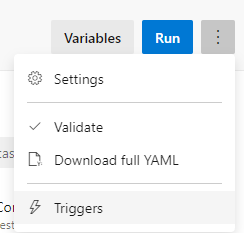
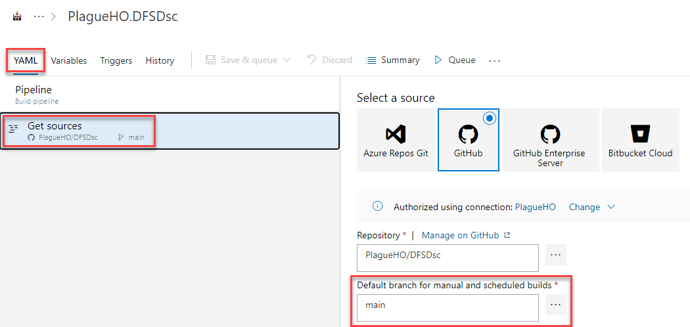
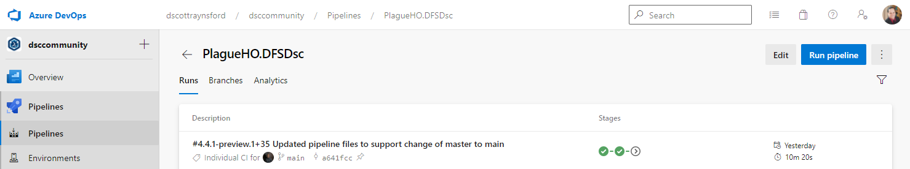
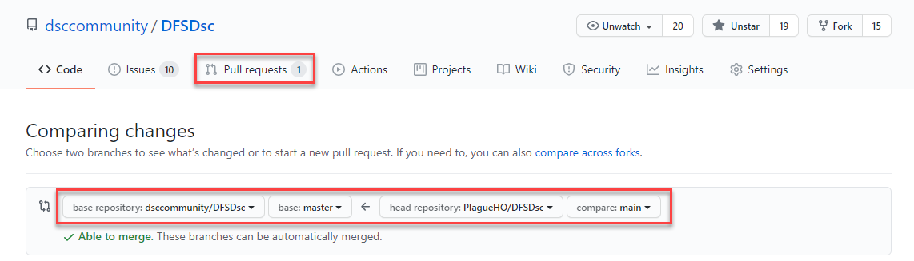
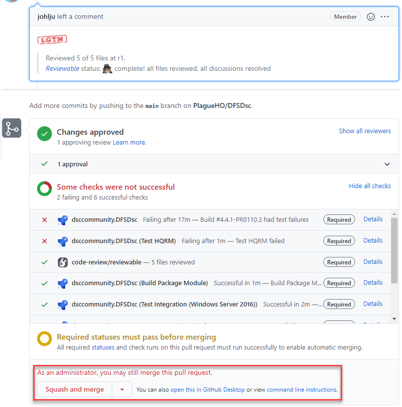
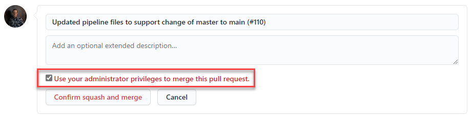
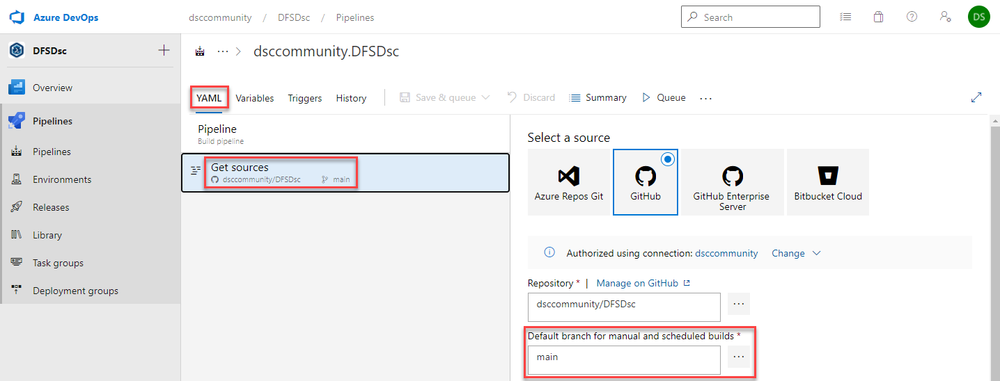

You are welcome to share any comments or issues you having around this process in the Discord or Slack #DSC channel.
On the 1st of October 2020, GitHub announced
that the default branch name for new repositories was changing from master
to main.
This post describes the process required to rename master branch to main
for a DSC community resource module. It is up to individual maintainers if they
wish to rename master to main on their repositories
It is assumed that the DSC module repository is already using the DSC module Plaster template in the Sampler project, or has been converted to use the new CI pipeline using the steps mentioned in Steps to convert a module for continuous delivery.
This blog post focuses on resources hosted in the dsccommunity.org, GitHub organization, so many of the steps will refer to this location. However, this process may still work with resources that are not located in this GitHub organization.
To perform the rename of a master branch to main for a DSC community
resource the following are required:
Admin access to the repository in dsccommunity.org.administrator access to the DSC Community CI pipeline
for the repository being converted.origin refers to the upstream DSC Community repository.my refers to your fork of the DSC community repository.The following is a summary of the steps that needs to occur to rename master to main:
main branch of your fork.main.main in your fork to master in the
upstream DSC Community repository.master, even though the CI will fail.main branch policy in the upstream DSC Community
repository.main.Update your fork from the upstream origin repository master branch by running the following commands:
# Move to the local repo
cd c:\source\{repositoryFolder}
# Make sure you have the remote names to upstream and fork.
# 'origin' should refer to the upstream DSC Community repository.
# 'my' should refer to your fork of the repository.
git remote -v
# Get latest changes so we get all commits and tags
git checkout master
git fetch origin master # origin is the remote pointing to upstream DSC Community repository.
git rebase origin/master
git fetch origin --tags # get any (new) tags from origin/master
git push my master --force # my is the remote pointing to fork
git push my --tags # push any (new) tags to my/master
Note: If you have an Azure DevOps pipeline linked to your fork of the repository then you should be able to validate that these changes work.
Some of the pipeline files in the default branch will need to be updated to support the new default branch name ‘main’. To update these files:
Add a new entry to the ### Changed section under ## [Unreleased] in
the CHANGELOG.md:
- Renamed `master` branch to `main` - Fixes [Issue #{issue number}](https://github.com/dsccommunity/{repository}/issues/{issue number}).
Replace the branches section in the GitVersion.yml file with:
branches:
master:
tag: preview
regex: ^main$
pull-request:
tag: PR
feature:
tag: useBranchName
increment: Minor
regex: f(eature(s)?)?[\/-]
source-branches: ['master']
hotfix:
tag: fix
increment: Patch
regex: (hot)?fix(es)?[\/-]
source-branches: ['master']
Replace the master with main in the build badges and anywhere else
that refers to the master branch in this repository.
[](https://dev.azure.com/dsccommunity/WsManDsc/_build/latest?definitionId=6&branchName=main)

[](https://dsccommunity.visualstudio.com/WSManDsc/_test/analytics?definitionId=6&contextType=build)
Note: Care should be taken to not change URLs that refer to files in the master branch of other repositories that have not been updated to use
main.
trigger\branches\include section to be maintrigger:
branches:
include:
- main
env section of the publish_release
and the send_changelog_PR tasks of the Deploy stage.ReleaseBranch: main
MainGitBranch: main
For example, this is what the publish_release and send_changelog_PR tasks
should look like:
- task: PowerShell@2
name: publish_release
displayName: 'Publish Release'
inputs:
filePath: './build.ps1'
arguments: '-tasks publish'
pwsh: true
env:
GitHubToken: $(GitHubToken)
GalleryApiToken: $(GalleryApiToken)
ReleaseBranch: main
MainGitBranch: main
- task: PowerShell@2
name: send_changelog_PR
displayName: 'Send CHANGELOG PR'
inputs:
filePath: './build.ps1'
arguments: '-tasks Create_ChangeLog_GitHub_PR'
pwsh: true
env:
GitHubToken: $(GitHubToken)
ReleaseBranch: main
MainGitBranch: main
Important: It is possible that there will be additional tasks that require these values to be set. If that is the case then it is also likely that adjustments will also need to be made to Sampler. Please raise an issue over in the Sampler repository if you have a Sampler task that needs to be notified of the change to the name of
masterbranch.
deploy stage condition by changing the
refs/heads/master to refs/heads/main: - stage: Deploy
dependsOn: Test
condition: |
and(
succeeded(),
or(
eq(variables['Build.SourceBranch'], 'refs/heads/main'),
startsWith(variables['Build.SourceBranch'], 'refs/tags/')
),
contains(variables['System.TeamFoundationCollectionUri'], 'dsccommunity')
)
In the build.yml file in the DscTest section add the line:
MainGitBranch: main
Update the master to main in the license URI in the module manifest:
LicenseUri = 'https://github.com/dsccommunity/WSManDsc/blob/main/LICENSE'
If the module is configured with automated generation of wiki documentation then
update any references for master to main in the examples:
.LICENSEURI https://github.com/dsccommunity/WSManDsc/blob/main/LICENSE
If the module is configured with automated generation of wiki documentation then
update any references for master to main.
If the module is configured to send code coverage results to codecov.io
then you should also update the codecov branch: in codecov.yml file to
main:
codecov:
# main should be the baseline for reporting
branch: main
Run the following git commands to commit your changes:
git add .
git commit -m 'Updated pipeline files to support change of master to main'
git push my master
At this point in the process the pipeline will start failing until we rename the default branch in the next step.
NOTE: Due to Azure DevOps is using an older version of GitVersion it could seem that the pipeline will still work, but running
.\build.ps -Task buildlocally with GitVersion v5.6 or higher installed will fail the pipeline. This is resolved in the next step.
In your web browser:
Settings tab.Branches.main.Rename branch.If you have an Azure DevOps pipeline connected to your fork this should
have triggered a new build on the renamed branch (main), if not we
can trigger it manually in the next optional step by choosing “Save & Queue”.
If you have an Azure DevOps pipeline connected to your fork you
should update the ‘Default branch for manual and scheduled builds’ setting
from master to main:
Edit to edit the pipeline.Triggers from the ellipsis menu.
YAML tab.Get Sources.Default branch for manual and scheduled builds to main.
Save & Queue button.If you have an Azure DevOps pipeline connected to your fork the pipeline should have automatically run in Step 2 and/or step 3. However, if it did not then you can run the pipeline manually to validate that it works correctly.
The updated pipeline changes need to be submitted to the upstream
DSC Community repository master branch via a Pull Request.
In your web browser:
Pull requests tab.New pull request.base repository is set to the upstream DSC Community
repository master branch.head repository is set to your fork repository main
branch.
Create pull request.Create pull request.The pull request should be reviewed by a maintainer or other community member.
Important: The Azure DevOps CI pipeline will fail for this pull request. The failures will usually occur in the ‘Run HQRM Test’ task in the ‘HQRM’ stage. This is expected behavior and is unavoidable at this point. This pull request will need to be merged in the next step regardless of the build failures which will be fixed in subsequent steps.
A maintainer with admin privileges will need to merge this pull request:
Note: Using a merge commit or rebase merge are both acceptable. A squash merge is not required.
In your web browser:
Settings tab.Branches.main.Rename branch.This should have triggered a new build on the renamed branch (main), if
not we can trigger it manually in Step 10 by choosing “Save & Queue”.
In your web browser:
Open GitHub.
Navigate to upstream DSC Community repository.
Select the Settings tab.
Select Branches.
Click the Edit button on the branch protection rule for ‘main’.
Enter ‘main’ in the Branch name pattern field.
Tick Require pull request reviews before merging.
Tick Require status checks to pass before merging.
Tick Require branches to be up to date before merging.
Tick the status checks that are required to pass.
Tick Restrict who can push to matching branches.
Click the Save changes button.
Enter your GitHub password, if required.
Update the ‘Default branch for manual and scheduled builds’ setting
from master to main:
Edit to edit the pipeline.Triggers from the ellipsis menu.
YAML tab.Get Sources.Default branch for manual and scheduled builds to main.
Save & Queue button.The Azure DevOps pipeline should have been run by Step 8 or Step 9. However, if it did not then you can run the pipeline manually to validate that it works correctly. Validate that it has completed successfully:
Run the following in the local repository to rename the default branch in the local clone, and update it with all the commits in the upstream branch and finally force push that to the fork’s default branch.
git checkout master
git branch -m master main
git fetch origin
git branch -u origin/main main
git rebase origin/main
git fetch my
git push my --force
Once all steps are complete then the repository master branch has been
successfully renamed to main.